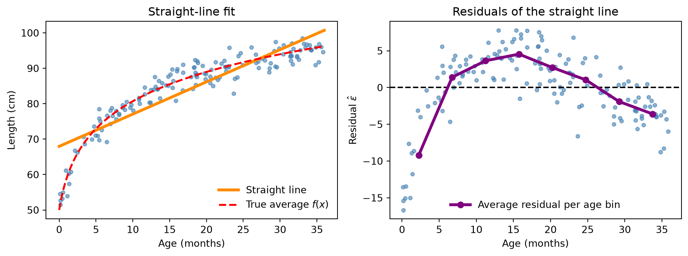
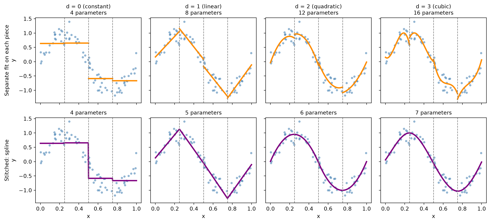

Suppose we measure two quantities, such as a child’s age (\(x\)) and child’s length (\(y\)) on many children. In regression (prediction modeling), we have a function \(f\) which takes in an input \(x\) and returns an average output at that input. The goal of prediction modeling is to learn \(f\) from data, so that for a new child we can predict their length using \(f(x)\).
Children of the same age do not all have the same length. We therefore write the observed length as the average length at that age \(f(x)\) plus the individual’s random deviation from that average, called the noise, \(\varepsilon\):
\[
\underbrace{y}_{\text{observed length of a child at age x}} = \underbrace{f(x)}_{\text{true average length of child at age x (unknown)}} + \underbrace{\varepsilon}_{\text{noise}}
\] We never observe \(f\) directly, so we estimate it from data and write the estimate as \(\hat f\). The predicted length of a child at age \(x\) is given by:
\[
\underbrace{\hat y}_{\text{predicted length at age } x}
=
\underbrace{\hat f(x)}_{\text{estimate of the average length at age } x}
\]
The gap between what we observed and what we predicted is the residual. It is our estimate of the noise \(\varepsilon\):
The numbers \(\beta_j\) are the model’s parameters (coefficients), and fitting the model means choosing them using the data.
linear in \(\boldsymbol\beta\) (the parameters) means each \(\beta\) is scaled by something or added to something (linear cominbation). No \(\beta\) is squared, put in an exponent, or multiplied by another \(\beta\).
linear in \(x\) (the predictor) means the curve is a straight line when you plot it.
Model
Linear in \(x\)?
Linear in \(\boldsymbol\beta\)?
\(\beta_0 + \beta_1 x^2\)
no
yes
\(\beta_0 + \beta_1^2 x\)
yes
no
\(\beta_0 + \beta_1 x\)
yes
yes
The model also says how spread out the noise is around the average which is the conditional variance. We assume the spread is the same everywhere:
\[
\text{Var}(Y \mid \mathbf{x}) = \sigma^2 .
\]
For a single child \(i\), the model can be written out in full. This is called the scalar form:
\[
y_i = \beta_0 + \beta_1 x_{i1} + \cdots + \beta_p x_{ip} + \varepsilon_i,
\qquad \varepsilon_i \overset{\text{iid}}{\sim} \text{Normal}(0,\ \sigma^2).
\] With \(n\) children we stack everything into vectors which can be represented as matrices:
\(Y\): \(n \times 1\)outcome vector; \(Y_i\) is the outcome for each observation \(i\).
\(\mathbf{x}\): the predictor vector of predictor values for each observation \(i\) (with a leading 1 for the intercept). A plain \(x\) is a single predictor.
\(X\): \(n \times (p+1)\)design matrix; the first column is all ones for the intercept; \(X_{ij}\) is the \(j\)-th predictor value for observation \(i\).
\(\beta_j\): are the model’s parameters (coefficients). Fitting the model means choosing them using the data.
\(\boldsymbol\beta\): \((p+1) \times 1\)coefficient vector; \(\beta_0\) is the intercept and \(\beta_j\) is the coefficient for the \(j\)-th predictor.
\(\mathbf{x}\boldsymbol\beta\): the dot product of the predictor vector with the coefficient vector (using matrix multiplication).
\(\sigma^2\): scalar, the conditional variance (how spread out the noise is around the average).
\(\boldsymbol\varepsilon\): \(n \times 1\)error vector; one noise term each observation \(i\).
\(\mathbf{0}_n\): vector of all zeros of length \(n\).
\(I_n\): identity matrix of size \(n\) (ones on the diagonal, zeros elsewhere).
6.1.2 What Is a Spline, and Why Do We Need One:
The problem: a straight line is too rigid. The model \(f(x) = \beta_0 + \beta_1 x\) says that every extra month of a child’s age adds the same \(\beta_1\) cm of length, at every age. Real growth however, plateaus where the child may grow more rapidaly during the early motnhs of infancy but for later months of infancy, they grow as a slwoer rate, creating a bending in the curve. A straight line cannot bend, so it will over-predict in some regions and under-predict in others, no matter how much data we collect. (A multiple linear regression is not a good fit).
Code
import numpy as npimport matplotlib.pyplot as pltrng = np.random.default_rng(7)n =150age = rng.uniform(0, 36, n)def f_true(a):return50+12.8* np.log1p(a) # true average length (fast early, slower later)length_cm = f_true(age) + rng.normal(0, 2.5, n) # observed = true average + noise# straight-line (least squares) fit and its residualsslope, intercept = np.polyfit(age, length_cm, 1)resid = length_cm - (intercept + slope * age)age_grid = np.linspace(0, 36, 200)# average residual within age bins (a simple smooth)edges = np.linspace(0, 36, 9)centers = (edges[:-1] + edges[1:]) /2bin_means = [resid[(age >= lo) & (age < hi)].mean()for lo, hi inzip(edges[:-1], edges[1:])]fig, ax = plt.subplots(1, 2, figsize=(10, 3.8))ax[0].scatter(age, length_cm, s=14, color="steelblue", alpha=0.6)ax[0].plot(age_grid, intercept + slope * age_grid, color="darkorange", lw=3, label="Straight line")ax[0].plot(age_grid, f_true(age_grid), "r--", lw=2, label="True average $f(x)$")ax[0].set(xlabel="Age (months)", ylabel="Length (cm)", title="Straight-line fit")ax[0].legend(loc="lower right", frameon=False)ax[1].scatter(age, resid, s=14, color="steelblue", alpha=0.6)ax[1].axhline(0, color="black", ls="--")ax[1].plot(centers, bin_means, color="purple", lw=3, marker="o", label="Average residual per age bin")ax[1].set(xlabel="Age (months)", ylabel=r"Residual $\hat{\varepsilon}$", title="Residuals of the straight line")ax[1].legend(loc="lower center", frameon=False)plt.tight_layout()plt.show()

Figure 6.1: Left: a straight line fit to curved growth data. Right: the residuals of that fit.
The straight line sits above the data at the youngest and oldest ages, so it over-predicts there (negative residuals). In the middle it sits below the data, so it under-predicts (positive residuals). If the line were a good model, the residuals would scatter randomly around zero. Instead the purple curve shows a systematic upside-down U pattern. This is the signal that the true relationship bends, and collecting more data will not fix it.
6.2 Basis Expansion
The key idea: The linear spline is a linear model, meaning it is linear in the parameters \(\boldsymbol\beta\) even though the relationship between the child’s length and age is not a straight line, so it is not linear in \(x\). The fitting method from the previous section only needs the model to be a weighted sum with the \(\beta\)’s as weights. It does not care what the quantities being weighted are. So instead of feeding the model \(x\) itself, we can feed it features of \(x\), called basis functions\(b_1(x), \dots, b_M(x)\). This is called a basis expansion:
\[
E[Y \mid x] = \sum_{m=0}^{M} \beta_m\, b_m(x), \qquad b_0(x) = 1.
\] A basis function allows us to expand our predictor \(x\) to some feature space \(\Phi(x)\). Instead of using \(x\) directly, we choose a set of functions \(b_0(x), b_1(x), \dots, b_M(x)\) and build the curve as a weighted sum of them, \[f(x) = \beta_0 + \sum_{m=0}^{M} \beta_m\, b_m(x).\] Each basis function becomes one column of the design matrix \(X\), with entries \(X_{im} = b_m(x_i)\). Everything else is unchanged:
\[
Y = X\boldsymbol\beta + \boldsymbol\varepsilon \quad\longrightarrow\quad Y = X\Phi(X) + \boldsymbol\varepsilon
\]
This works like building the point \((3,2)\) from the blocks \((1,0)\) and \((0,1)\) as \(3(1,0) + 2(0,1)\). The coefficients \(\beta_m\) say how much of each block to use. For example, the basis \(1, x, x^2\) builds every curve of the form \(\beta_0 + \beta_1 x + \beta_2 x^2\). Each basis function evaluated at the data becomes one column of the design matrix \(X\).
Replacing \(x\) with basis functions \(b_0(x), \dots, b_M(x)\) changes only the columns of the design matrix. We write the expanded design matrix as \(\Phi\):
The entry in row \(i\) and column \(m\) is \(\Phi_{im} = b_m(x_i)\): basis function \(m\) evaluated at observation \(i\). The model keeps the same form:
Dimension check:\(\Phi'\) is \((M+1)\times n\), so \(\Phi'\Phi\) is \((M+1)\times(M+1)\), \(\Phi'Y\) is \((M+1)\times 1\), and therefore \(\hat{\boldsymbol\beta}\) is \((M+1)\times 1\), one coefficient per basis function.
Example. The three children with ages \(2, 8, 18\) onths respectively and the parabola basis \(b_0(x) = 1,\ b_1(x) = x,\ b_2(x) = x^2\):
Each piece only has to describe the data nearby, so the curve is flexible where it needs to be, local, and stable, and because it is still a basis expansion, it is still a linear in \(\boldsymbol\beta\) even though the curve is a parabola in \(x\).
Model
Columns of \(X\)
Shape in \(x\)
Straight line
\(1,\ x\)
line
Parabola
\(1,\ x,\ x^2\)
parabola
Spline
\(1,\ x,\ \dots\) (built from knots)
flexible curve
6.2.1 Types of Basis Functions:
One type of basis expansions are Polynomials:
Take \(b_d(x) = x^d\), so that
\[
x \longrightarrow \{1,\ x,\ x^2,\ x^3,\ \dots,\ x^p\}, \qquad d = 0, 1, 2, \dots, p.
\]
Pros: smooth curve (no discontinuities)
Cons: It is a global function: every coefficient affects the whole curve (function), so changing one coefficient \(\beta_m\) changes \(f(x)\) everywhere, and data at one end of the range can change the fit at the other end. High-degree polynomials also tend to oscillate between data points and to diverge in the tails.
Another type of basis expansions are Piecewise Polynomials:
0th degree - piecewise constant
1st degree - piecewise linear
2nd degree - piecewise quadratic
3rd degree - piecewise cubic
etc.
Pros: It is a local function: local chnages only affect the segemnt they occur in rather than the entire curve (function), so changing one coefficient \(\beta\) will chnage change the specifc segment of the curve.
Cons: Nothing forces neighboring peices to meet so there can be discontinuities and jumps in the curve where the knots begin and end. We must choose where these knots begin and end.
Another type of basis expansions are Spline:
A compromise of botb Degree Polynomials and Piecewise Polynomials:
Pro: smooth curve (no discontinuities) and a local function since changes in coefficient \(\beta\) will chnage change the specifc segment of the curve defined by the knots which are specific pointd which breaks up the x-axis into segments.
Cut the \(x\)-axis into segments at chosen points called knots. The knots control where the slope of the curve is allowed to change.
Fit a simple, low-degree polynomial on each piece.
Stitch the pieces together so the joins of the curves are smooth.
6.2.2 Piecewise Polynomials and Stitched Splines
Splines act as stitched piecewise polynomials when fit to the data. The figure below fits the same noisy data in two ways. The columns are the degrees \(d = 0, 1, 2, 3\), and the knots (dashed lines) are at \(x = 0.25, 0.5, 0.75\).
Code
import numpy as npimport matplotlib.pyplot as pltrng = np.random.default_rng(7)n =80x = np.sort(rng.uniform(0, 1, n))y = np.sin(2* np.pi * x) + rng.normal(0, 0.2, n)knots = np.array([0.25, 0.5, 0.75])edges = np.concatenate([[0], knots, [1]])K =len(knots)names = {0: "constant", 1: "linear", 2: "quadratic", 3: "cubic"}def trunc_basis(x, d): cols = [x**j for j inrange(d +1)] cols += [np.where(x > k, (x - k)**d, 0.0) for k in knots]return np.column_stack(cols)fig, axes = plt.subplots(2, 4, figsize=(13, 6), sharex=True, sharey=True)for d inrange(4):# Top row: a separate polynomial on each piece ax = axes[0, d] ax.scatter(x, y, s=10, color="steelblue", alpha=0.5)for lo, hi inzip(edges[:-1], edges[1:]): m = (x >= lo) & (x < hi) if hi <1else (x >= lo) & (x <= hi) coef = np.polyfit(x[m], y[m], d) g = np.linspace(lo, hi, 60) ax.plot(g, np.polyval(coef, g), color="darkorange", lw=2.5)for k in knots: ax.axvline(k, color="gray", ls="--", lw=1) ax.set_title(f"d = {d} ({names[d]})\n{(K+1)*(d+1)} parameters", fontsize=10)# Bottom row: the spline (truncated power basis, least squares) ax = axes[1, d] ax.scatter(x, y, s=10, color="steelblue", alpha=0.5) beta = np.linalg.lstsq(trunc_basis(x, d), y, rcond=None)[0] g = np.linspace(0, 1, 400) ax.plot(g, trunc_basis(g, d) @ beta, color="purple", lw=2.5)for k in knots: ax.axvline(k, color="gray", ls="--", lw=1) ax.set_title(f"{K+d+1} parameters", fontsize=10) ax.set_xlabel("x")axes[0, 0].set_ylabel("Separate fit on each piece\ny")axes[1, 0].set_ylabel("Stitched: spline\ny")plt.tight_layout()plt.show()

Figure 6.2: Top: a separate polynomial of degree d fit on each of four pieces (jumps at the knots). Bottom: the spline of the same degree, stitched so that s, s’, …, s^(d-1) are continuous.
In the top row, each piece is fit on its own, so nothing forces neighboring pieces to meet: the orange curves jump at the knots, and the number of parameters grows quickly as \((K+1)(d+1)\). In the bottom row we use the same degree and the same knots, but we require the curve and its first \(d-1\) derivatives to match at every knot. The result is connected (and smooth for \(d \ge 2\)) and needs only \(K+d+1\) parameters. For \(d = 0\) there is nothing to match, so both rows show the same step function. The rest of this chapter makes the bottom row precise.
6.3 General Definition of Splines
Let \(a < \kappa_1 < \cdots < \kappa_K < b\) be \(K\)knots. They cut \([a, b]\) into \(K+1\) intervals. Write \((u)_+ = \max(0, u)\) for the positive part of \(u\): it equals \(u\) when \(u > 0\) and \(0\) otherwise.
ImportantDefinition
A spline of degree \(d\) with knots \(\kappa_1, \dots, \kappa_K\) is a function \(s\) such that
on each of the \(K+1\) intervals, \(s\) is a polynomial of degree at most \(d\), and
\(s\) and its derivatives \(s', s'', \dots, s^{(d-1)}\) are continuous at every knot.
The first derivative \(s'\) is the slope of the curve, and the second derivative \(s''\) is how fast the slope is changing (the curvature). “Continuous” means no jumps, so a continuous \(s'\) means no kinks.